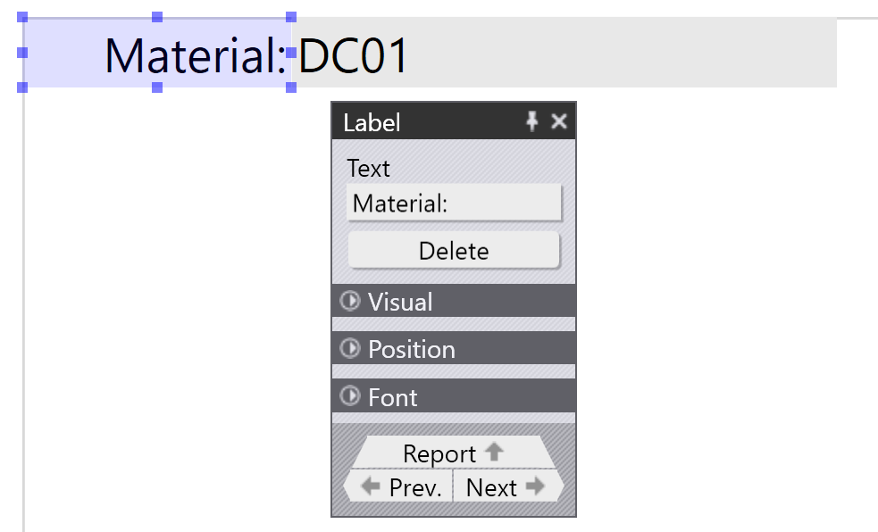
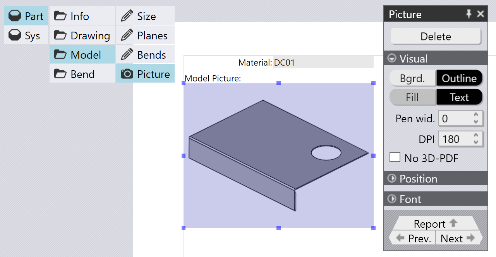
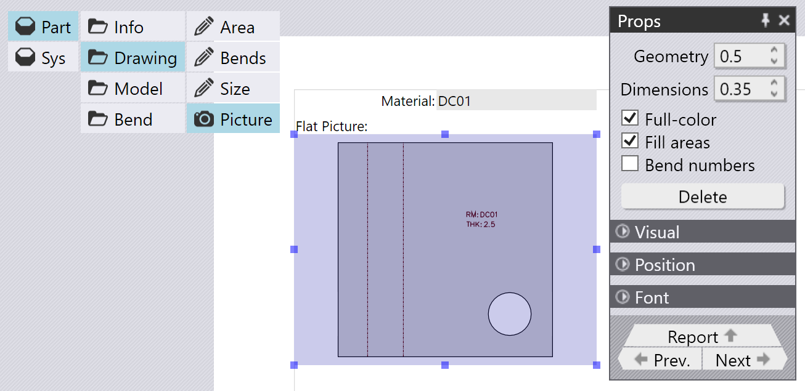
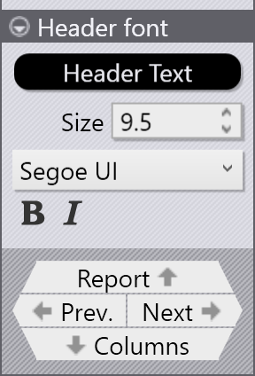

Fields, pictures and tables
Clicking on the data sources opens them and display additional levels of clickable buttons. These can be used to add fields, pictures and tables to the report.
Adding a field
A field is a simple numeric or text display from the report. For example, by clicking on Part / Info / Name, you can insert a field in the report that displays the Part’s material:

When you do this, TecZone Bend will actually add two items into the report - a Field displaying the value, and a Label to the left of that field. You can edit the settings for the label, or for the field, by just clicking on it.
Editing a label
When you click on the label that just got added, you will see a panel that allows you to edit various settings for that label. The label also gets highlighted and sizing handles are added around the label, allowing you to resize it by dragging any of them. You can also click right on the label and drag it around to reposition it. When you are dragging to move or resize an item, various snap indicators are automatically displayed to make it easier to align this label precisely with other items already on the report.

The editing panel for the label (and for most other report items) contains a large number of settings to tune every aspect of the visual display. You can see these by opening the various expandable groups:

The image above right shows a color picker in use to set the text color for the label.
Inserting a picture
A picture in a report is indicated by a camera icon (rather than the pencil icon used for simple fields). For example, by clicking Part / Model / Picture, you can insert a picture of the 3D model of the part:

The image above shows a picture inserted and then being edited by clicking on it. The panel for the picture shows some settings used to control the image. The exact settings may change, depending on the actual picture that was inserted. In this case, the DPI setting is used to control the rendering resolution of the picture (higher values will look nicer, but will cause the final report size to become larger). The No 3D PDF setting is used to disable generation of 3D PDF files[1].
If you insert a picture of a 2D drawing (flat), the picture options are different, as seen in the image below:

The settings here control the line width used for outlines, and for dimensions. There are settings to display the bend sequence numbers, and to control whether the closed outline of the part is filled.
Inserting a table
You can insert a table into a report, by choosing one of the items that displays a table icon. For example, navigate to Part / Bend / Bends / Add table to display some information about all the bend operations in a part:

The Pick Columns section is used to select the columns that are displayed in the table (from among all the columns available for this tabular data). You can edit more attributes of each column by clicking on the Column navigation link at the bottom of the table panel:

This brings up the Column editor, where the attributes of the Column can be edited, as seen below:

The Title field is used to set the displayed title for the column, while the Expression field is the internal TecZone Bend data that is displayed in this column. You can use the < Shift and Shift > buttons to shift this column left or right in the ordering, and use the Insert and Delete buttons to insert new columns, or to delete the selected column.